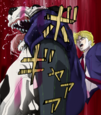
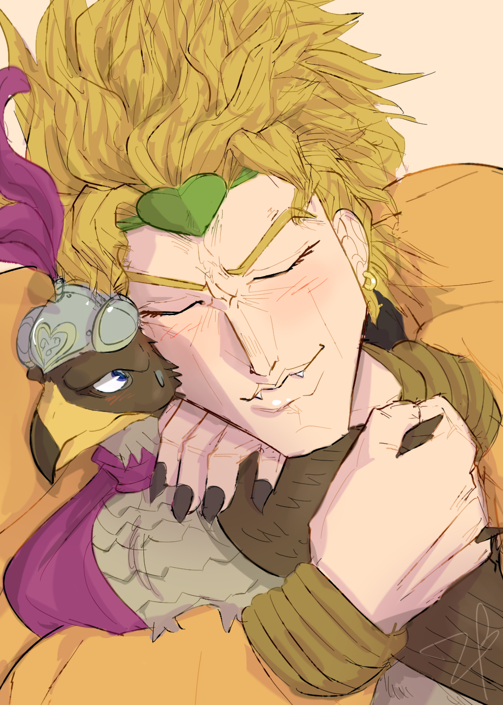
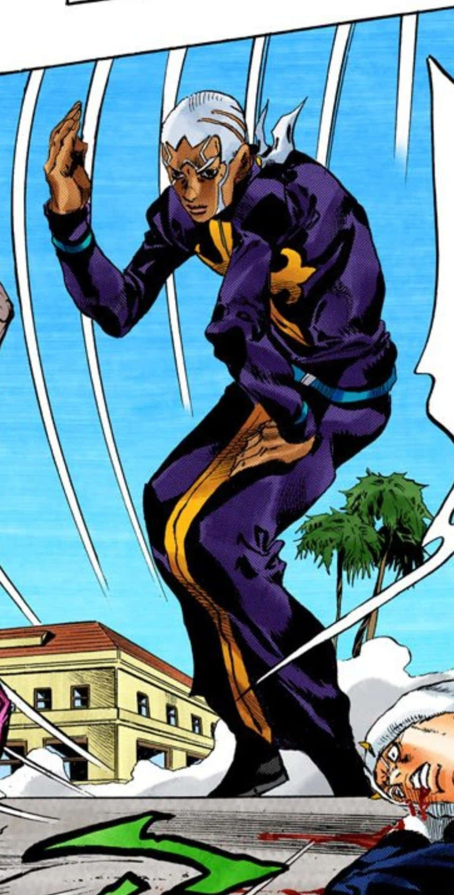
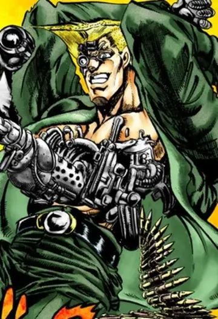
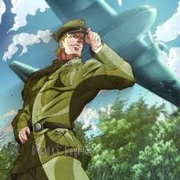

Dio Brando odeia animais!

Mentira! Dio Brando ama animais.

Dio Brando odeia animais!

Mentira! Dio Brando ama animais.

Padre Pucci é angolano!

Mentira! Padre Pucci nasceu na Itália.

Rudol von Stroheim é um robô!

Mentira! Rudol von Stroheim é um humano, apenas algumas partes são robô.

P!
Pinguins não voam, mas são excelentes nadadores.
Pinguins conseguem voar como pássaros!
Pinguins não voam, mas são excelentes nadadores.